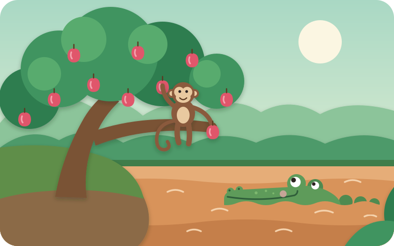
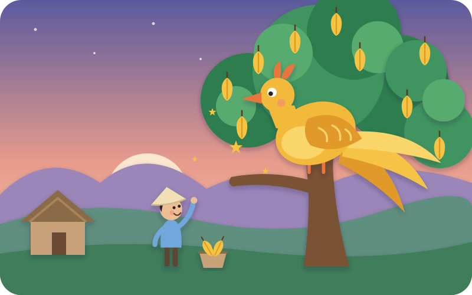

1 · Ukraine · loud
🧤 The Mitten
A lost red mitten in the snow, and animals squeezing in one by one — "Knock, knock! Who lives in the mitten?" — until a tiny cricket makes it pop.
KaiSTEM · Stories
Fairy tales from around the world, retold for a four-year-old — three stories, about seven minutes each, made to fill a thirty-minute drive with a little magic.
How to use these in the car
If you're driving, don't read from the phone. Each story opens with a six-beat card — read it the night before (or while parked), and tell the story from memory. These tales were told aloud for centuries before anyone wrote them down; your own words are the traditional way.
Same ritual every time. Start with "Story, story — are your ears open?" (Kai: "Open!") and finish with "Snip, snap, snout — this tale's told out." Little ones love knowing what comes next.
Kai has jobs. Every story has a line to chant and a hands-free action he can do from his car seat — counting, snap-claps, flapping wings. Pause and let him fill them in.
Loud first, calm last — so he arrives at school settled, not bouncing.
A lost red mitten in the snow, and animals squeezing in one by one — "Knock, knock! Who lives in the mitten?" — until a tiny cricket makes it pop.

A river ride on a crocodile's back, a sneaky plan, and a monkey who thinks fast: "I left my heart in the tree!"

A giant golden bird, a moonlit sea, and the rhyme every Vietnamese child knows: "Eat one fruit, pay in gold…"
About these retellings
All three are real, centuries-old folk tales. We kept each story's heart — its chant, its trick, its magic — and softened the scary parts for a four-year-old: nobody is eaten, lost or hurt, and the greedy characters end up wiser, not punished. Each story page says what we changed. Illustrations are paper-cut style, drawn for this site.